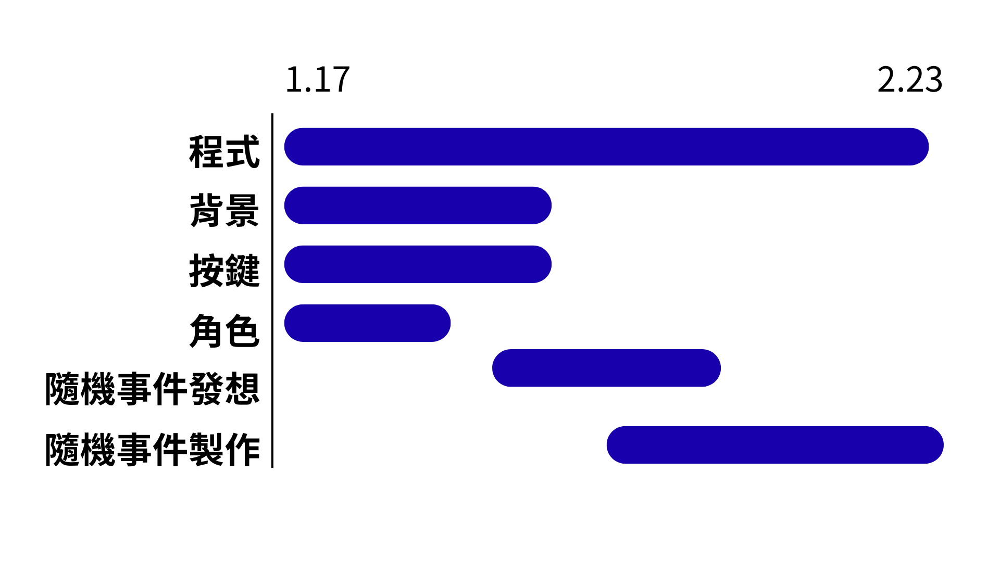

遊戲概要
◆ 遊戲名稱：截稿日
◆ 遊戲類型：策略、角色扮演、惡搞、模擬、無厘頭
◆ 遊戲平台：手機、電腦
◆ 遊戲定位：以設計團隊間的『內部競爭』為主題，透過詼諧的遊戲機制呈現現代創意產業的壓力與幽默。
故事背景
你們是一個設計團隊，為了工作方便，大家一起合租了一間公寓。
這次你們接到了一個加急的大案子，甲方表示：「時間緊急，能做多少做多少，最後作業量最高的，我們會再多給一些委託費」。
每個人都像是被解放的野獸，拼命地做著自己的工作，但競爭實在太激烈了。沒有人能拉開作業量的差距，所以你轉念一想……如果別人的進度比自己低，那自己不就是完成度最高的那個人嗎?!
然而團隊的成員似乎也想到了這件事。於是這場沒有硝煙的戰爭，在一個平凡的早晨默默開場。
三、
遊戲特色與玩法
1. 做作業：自己的作業進度 +1
2. 搞破壞：選擇一人，使對方作業進度 -1
3. 休息：下一次行動的效果翻倍
耐力值系統：
- 每次選擇「做作業」或「搞破壞」時 -1 耐力值
- 選擇「休息」時不扣耐力值並 +1 耐力值
- 每天早上自動恢復 1 耐力值（上限為 5）
- 耐力值為 0 時只能選擇休息
凌晨時段有特殊規則：
- 做作業：+1.5 進度
- 搞破壞：對方 -1.5 進度
- 休息：下一次行動翻倍，並額外 +1 耐力值
但你要知道你在搞破壞時，你所選擇的對象在做作業，則會少扣0.5；對方在休息，則會再多扣0.5；如果對方也在搞破壞，則不變。
凌晨時段搞破壞，如果對方在做作業，則會因為他超級清醒，所以反過來對你說教，你感到十分的羞愧，結果自己的作業進度-0.3。
偶爾會有特殊事件：
特殊事件會在任何時候出現，有可能是個人的也可能是團體的，每次事件都有不同的效果，包含但不限於增加作業進度、獲得防止破壞護盾等。
遊戲介面與流程


角色

甘特圖
